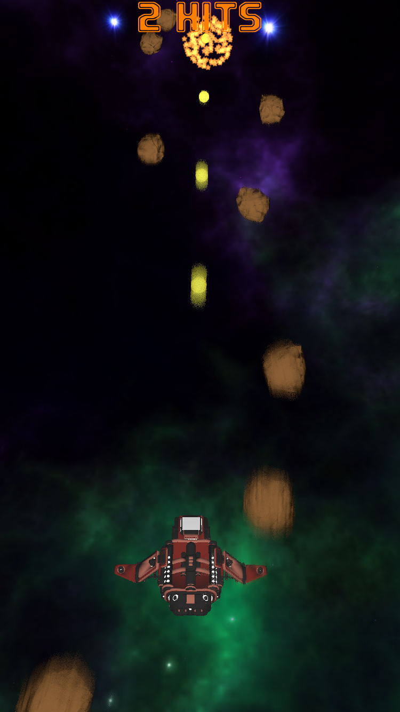

Introducción
Esta práctica tiene como objetivo aprender a utilizar la librería SceneKit de Apple, orientada a crear videojuegos 3D. Para ello, implementaremos un sencillo shoot'em'up en el que nuestra nave atraviesa un campo de asteroides, que deberemos esquivar y destruir. Moveremos la nave lateralmente (izquierda-derecha) utilizando el control de movimiento del dispositivo, y dispararemos haciendo tap sobre la pantalla. Podemos descargar el modelo de juego a implementar desde la App Store.

En primer lugar, crearemos un repositorio GitHub con una plantilla inicial accediendo a este enlace.